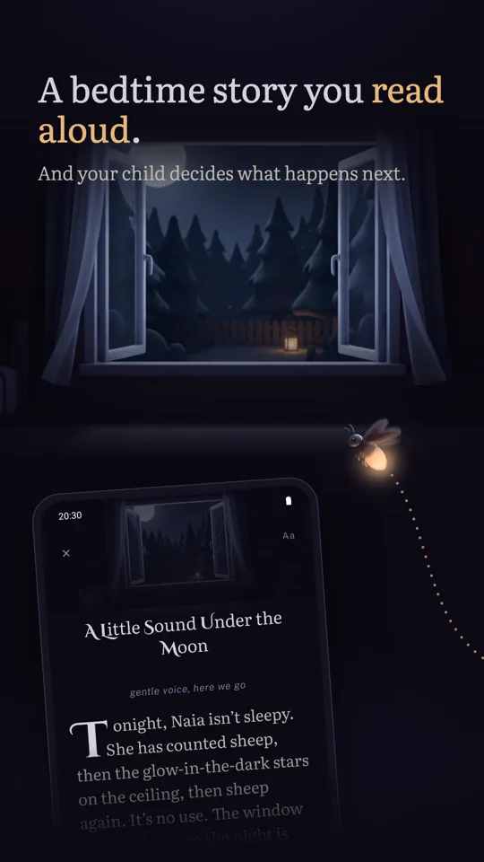
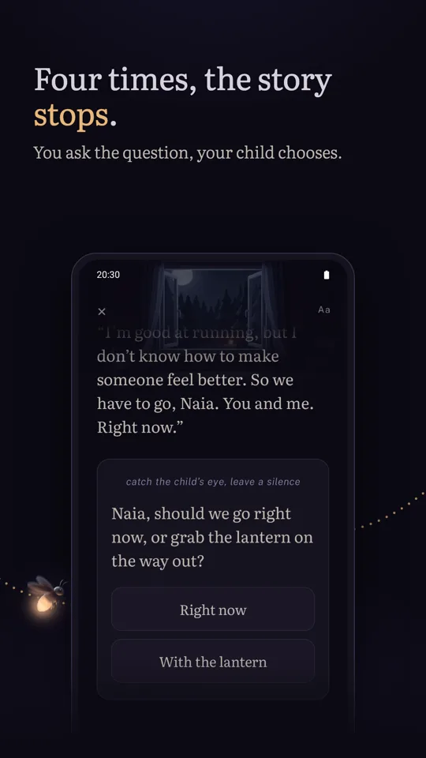
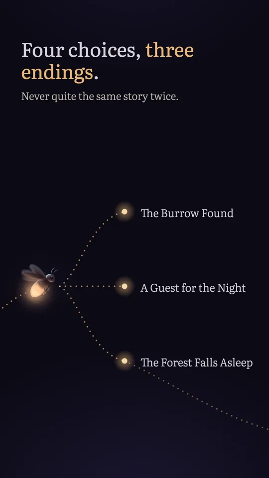
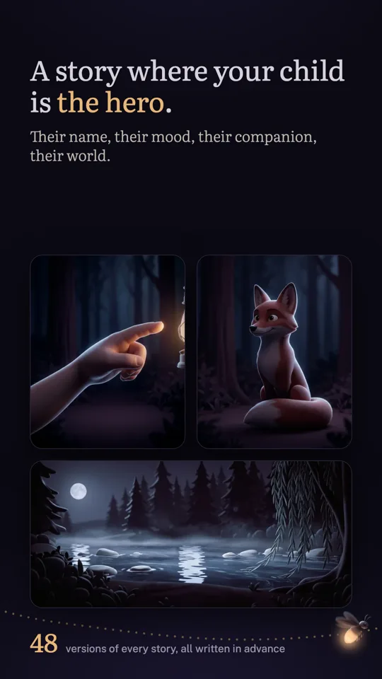
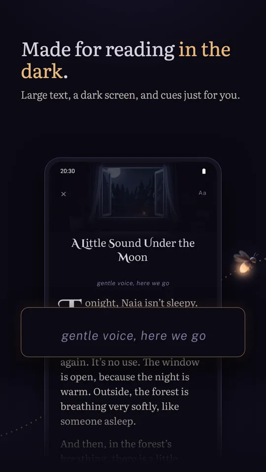
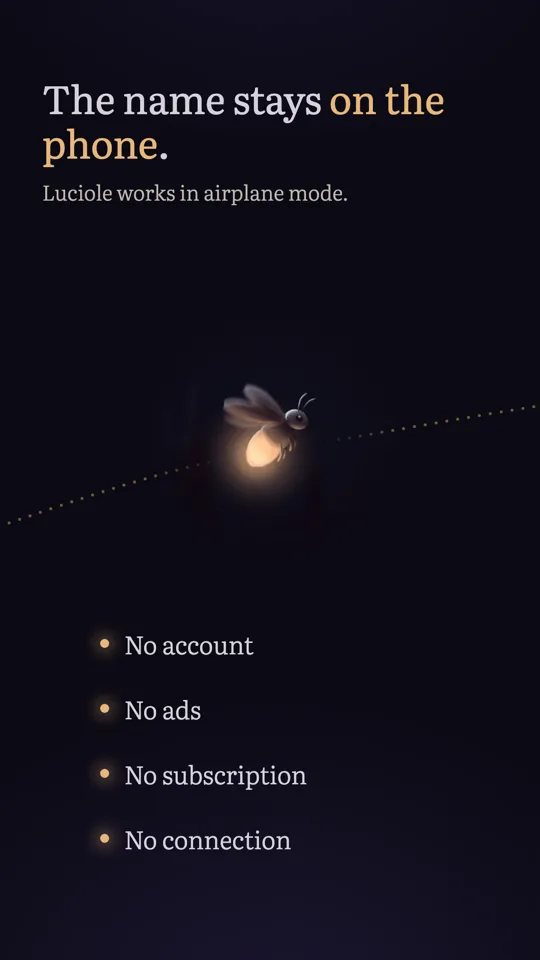
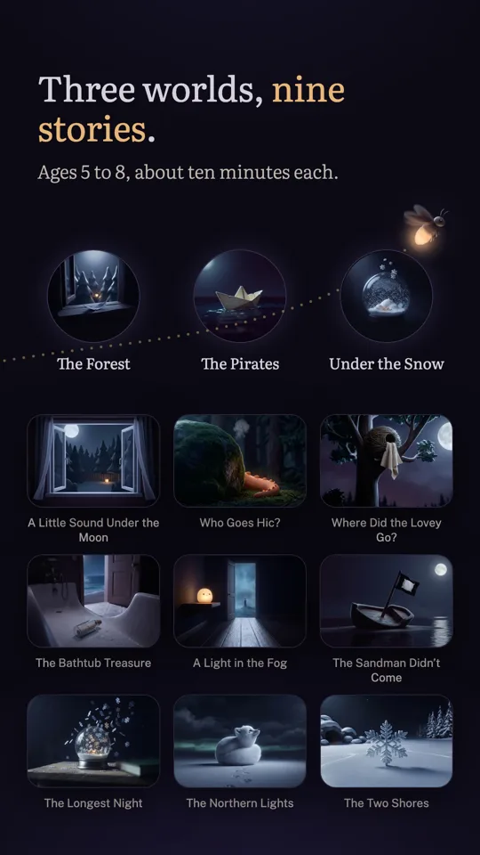

A story read aloud, decided by your child
-
You read, your child decides
You hold the phone and read. Four times, the story stops on a question you ask your child. Your child answers, you tap the choice, and the story takes a new turn.
-
Three endings
The choices really change what comes next. It’s never quite the same story from one night to the next.
-
Their name, their hero, their companion, their world
Brave, curious, playful or calm; one companion out of four, from the fox to the parrot or the penguin; one place out of three, from the river to the wreck or the ice floe. Forty-eight versions of every story, written, not assembled by a machine.
-
Made for the dark
Dark screen, cream text, a large font you can resize with one gesture. The story reads in one continuous scroll, with no page to turn, and each question arrives in a card just when it’s time to ask. Notes meant for you are in italics and aren’t read aloud.
-
Three worlds, nine stories
The forest, included, with its three stories; the pirates and the snow, three stories each, unlocked once and for all through Google Play. For ages five to eight, eight to ten minutes of reading each.
How it works
Your child’s name, then three pictures to choose: how your child feels tonight, who comes along, where it all happens.
You read aloud, in one continuous scroll, with no page to turn.
At each question, your child decides. You tap the choice, and you read on.
Screenshots







No account, no ads
Luciole collects, sends and shares no personal data. No account, no connection, no ads, no subscription: worlds are bought once, through Google Play, and the app works in airplane mode.
On the phone, it keeps your child’s name and the chosen pronoun, the choices made before each reading, the text size, and the history of stories read. Uninstalling the app erases all of it.
Questions
Can my child use it alone?
It isn’t made for that. Luciole is a ritual for two: the parent holds the phone and reads, the child listens and decides. There is nothing for the child to read, and nothing moving on the screen.
What age is it for?
Five to eight. The vocabulary is pitched for a six-year-old who listens, without assuming they can read.
How many stories?
Nine, in three worlds. The forest is included: “A Little Sound Under the Moon,” “Who Goes Hic?” and “Where Did the Lovey Go?” The pirates and the snow each unlock with a one-time purchase, with no subscription. Every story exists in forty-eight versions depending on the hero, companion and place chosen, with three endings, in English or in French. Nothing to download: everything is on the phone.
Does it need a connection?
Never for reading: the app works in airplane mode. Only buying a world goes through Google Play, which then needs a connection.
Can we pick up a story where we left off?
Yes. If your child falls asleep halfway through, the home screen offers to resume where the reading stopped.